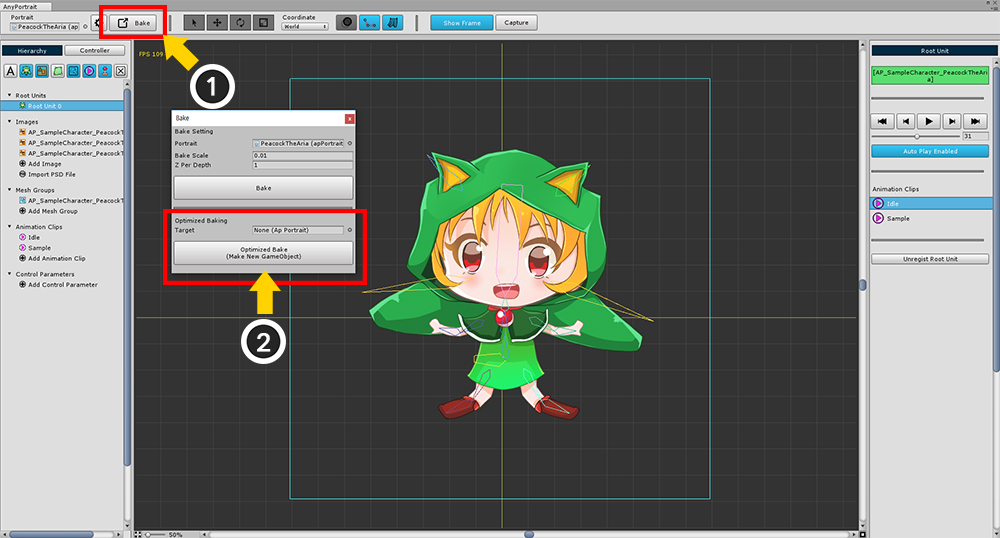
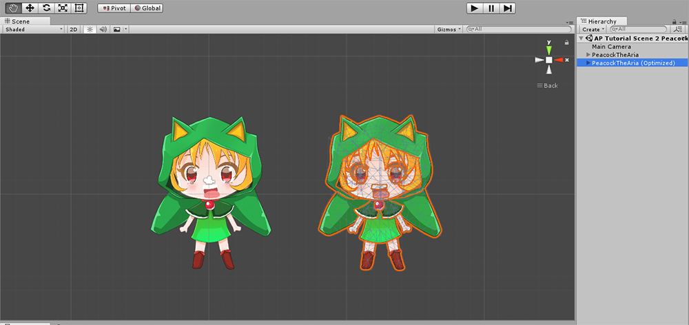

AnyPortrait > 메뉴얼 > 최적화된 Bake
최적화된 Bake
1.0.0
AnyPortrait에서 작업한 캐릭터를 씬으로 옮기는 것을 Bake라고 합니다.
"에디터에서 사용하는 데이터"와 "씬에서 실행되는 데이터"가 달라서 항상 Bake 과정을 거쳐야 합니다.
만약에 모든 편집 과정이 끝난 결과물의 경우, "에디터에서 사용되는 데이터"가 더 이상 필요가 없게 됩니다.
따라서 오직 "씬에서 실행되는 데이터"만 존재하는 Bake를 하면 메모리와 프리팹 용량 등을 아낄 수 있습니다.
이 페이지에서는 최적화된 Bake(Optimized Bake)를 하는 방법을 다룹니다.

(1) Bake 다이얼로그를 엽니다.
(2) Optimized Bake 버튼을 눌러서 최적화된 Bake를 실행합니다.
버튼 위에 Target 칸이 있는데, 지정된 대상으로 Bake를 할 수 있습니다.
Target이 비어있다면 새로운 객체를 만듭니다.
에디터에서 작업 중인 객체를 Target으로 지정할 수 없습니다.

씬을 확인하면 기존의 캐릭터 외에 "(Optimized)"가 이름에 더해진 캐릭터를 볼 수 있습니다.
이 객체는 오직 "씬에서 실행되는 데이터"만 가지고 있습니다.

최적화된 Bake를 한 이후에는 자동으로 Target에 연결됩니다.
참고 : AnyPortrait 에디터는 편집이 안되는 "최적화된 apPortrait"를 구분합니다.
따라서 이 객체들은 에디터에 노출이 되지 않습니다.